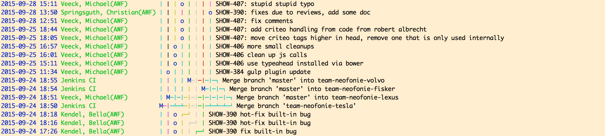
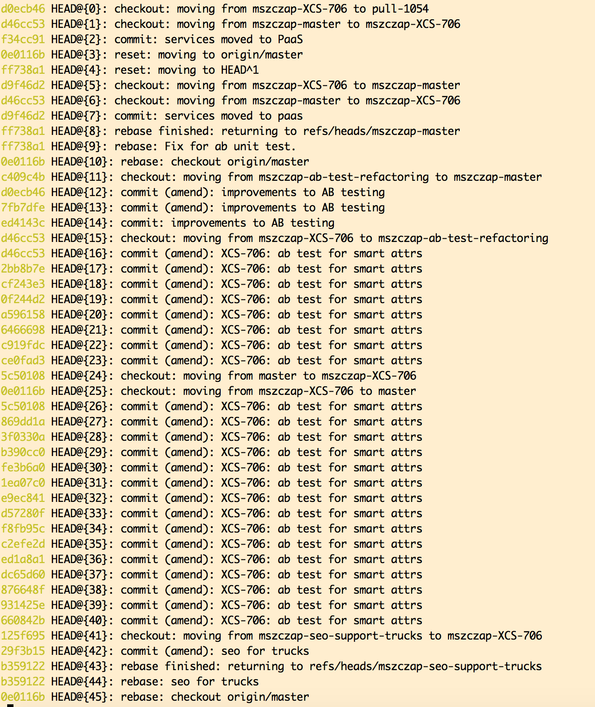

Git Advanced: forking/pull requests
Mateusz Szczap
mobile.de - eBay Inc. subsidiary
Pull Requests:
- (+) - form of code review
- (+) - lets a team review the changes
- (+) - commits with various code issues don't go to target repo to clutter history
- (+/-) - impossible to review after pushing a commit to the remote
- (-) - pre commit reviews can be slower
- (-) - in github - no patchsets yet like in Gerrit
Distribution types
- centralized (only one remote)
- distributed (multiple remotes)
centralized
- typically a subversion style model
- only one remote, by convention called: 'origin'
MacBook:engi mszczap$ git remote -v
origin https://github.com/paked/engi (fetch)
origin https://github.com/paked/engi (push)
centralized
MacBook:engi mszczap$ cat .git/config
[core]
repositoryformatversion = 0
filemode = true
bare = false
logallrefupdates = true
precomposeunicode = true
[remote "origin"]
url = https://github.com/paked/engi
fetch = +refs/heads/*:refs/remotes/origin/*
centralized
MacBook:engi$ git log origin/master
commit 1711595d93bcf5dc7ecff26ba0d47b0914d43ec9
Merge: 1a23404 fa4fd03
Author: Harrison Shoebridge <harrison@theshoebridges.com>
Date: Thu Aug 20 11:49:27 2015 +1000
Merge pull request #12 from paked/contribution-update
[ANNOUNCEMENT] Update README with information on slack and trello
commit fa4fd037caa6eb71bc4fbc6a4a30aa3f6b2a2468
Author: Harrison Shoebridge <harrison@theshoebridges.com>
Date: Wed Aug 19 09:14:08 2015 +1000
Update README with information on slack and trello
distributed
MacBook:engi mszczap$ git remote add mszczap git@github.com:matiwinnetou/engi.git
MacBook:engi mszczap$ git remote -v
mszczap git@github.com:matiwinnetou/engi.git (fetch)
mszczap git@github.com:matiwinnetou/engi.git (push)
origin https://github.com/paked/engi (fetch)
origin https://github.com/paked/engi (push)
distributed
MacBook:engi mszczap$ cat .git/config
[core]
repositoryformatversion = 0
filemode = true
bare = false
logallrefupdates = true
precomposeunicode = true
[remote "origin"]
url = https://github.com/paked/engi
fetch = +refs/heads/*:refs/remotes/origin/*
[remote "mszczap"]
url = git@github.com:matiwinnetou/engi.git
fetch = +refs/heads/*:refs/remotes/mszczap/*
distributed
MacBook:engi mszczap$ git fetch --all
Fetching origin
Fetching mszczap
From github.com:matiwinnetou/engi
* [new branch] contribution-update -> mszczap/contribution-update
* [new branch] dev -> mszczap/dev
* [new branch] gh-pages -> mszczap/gh-pages
* [new branch] master -> mszczap/master
distributed
MacBook:engi mszczap$ git branch -lvv
* master f6b0469 hello
distributed
Winnetou-iMac:engi mati$ git branch -rvv
mszczap/contribution-update fa4fd03 Update README with information on slack and trello
mszczap/dev 96c8133 Remove webgl task
mszczap/gh-pages 0fcb3cb Create gh-pages branch via GitHub
mszczap/master 1711595 Merge pull request #12 from paked/contribution-update
origin/HEAD -> origin/master
origin/contribution-update fa4fd03 Update README with information on slack and trello
origin/dev 96c8133 Remove webgl task
origin/gh-pages 0fcb3cb Create gh-pages branch via GitHub
origin/master 1711595 Merge pull request #12 from paked/contribution-update
forking a repo means forking with all branches (!)
distributed
Winnetou-iMac:engi mati$ git diff origin/master..mszczap/master
learnings:
- we do not need local branches to browse through remote branches
- we have a local copy of all remote branches available once we perform 'git fetch --all'
- forking a repo means forking all branches (!)
Git workflow models
- Centralized (working only on one centralized repo)
- Static feature branch (working only on one centralized repo)
- Gitflow (working only on one centralized repo)
- Forking (working only on multiple repos)
Centralized
- working only on master
- was never used at mobile
- typically developers do "git pull --rebase" and apply they commit on top of what is in master
Static feature branch
- working only on one centralized repo
- mobile platform default
- old jenkins could "understand" only static branches
Feature branch
- working only on one centralized repo
- master as the main integration point
- feature branches are named after tickets or with descriptive names ("price_transparency")
- with "ci-jenkins" really easy - jobs will be created for each feature branch separately
Gitflow
- working only on one centralized repo
- just like feature branch model but with extra conventions for branch names
- extra "develop" branch as an integration point
- feature branches are branched off develop branch
- master represents live code
- hot fix branches that are branched off master
- with "ci-jenkins" really easy - jobs will be created for each feature branch separately
git's default mode - forking
- the only option when a team does not have write access to the parent repository
- helps to keep a git history tidy, if not done, can make browsing through history difficult
- helps to avoid silly commits, when we want to check our code on integra
Git craftsmanship
- we openly do this in Java, e.g. refactoring but why not in git?
- squash small meaningless commits
- clean commit messages with ticket number
- commits, which are atomic, i.e. can be released separately still clustered
An example of messy history:
git pull can mess things up
Do not use git pull --rebase
Often your history is rewritten locally and git pull --rebase will just make maters worse as it gets changes from the server
use git fetch
git fetch -p --all (fetches all repos and prunes deleted remote ones)
git fetch -p origin (fetches only from remote:origin and prunes)
git fetch -p --multiple origin upstream (fetches from remotes: (origin and upstream and prunes)
rebase your commit on top
- git rebase origin/master (your commit(s) are applied on top of what is in master)
- rebase can be used only if you work in isolation (fork or your branch)
configure - git push.default
git config --global push.default upstream
- nothing - do not push anything.
- matching - push all matching branches.
- upstream - push the current branch to its upstream branch
- simple - like upstream
- tracking - deprecated synonym for upstream.
- current - push the current branch to a branch of the same name.
git commit --amend
- git commit --amend (changes last commit that is on tip of the branch)
- git push REMOTENAME LOCAL_BRANCH:REMOTE_BRANCH, e.g. git push -u mszczap mszczap-XCS-456:XCS-456
- git push --force
git rebase - rewrite history
- git rebase -i master
- useful when we have lots of commits to squash
- can be painful as there maybe a need to resolve conflict multiple times
- should be avoided by using git commit --amend or if we have to...
- use - git apply trick!
git reset
- git reset --soft HEAD^1 (keeps the changes in index, undo - removes one commit)
- git reset --hard origin/master (removes the changes and restores a local branch as if it was remote)
- git reset --hard HEAD~3 - undo three commits permanently
git apply trick
- git apply <(git diff master..mszczap/xcs-465)
- changes local index and applies all the changes
- useful to "squash commits" - works much better than git rebase -i
git checkout from remote
- git checkout -b LOCAL_BRANCH - what we normally do (assumes origin)
- git checkout -b LOCAL_BRANCH --track REMOTE/BRANCH_NAME (remote can be specified)
git branch
- git branch -lvv (shows local branches with upstream tracking info)
- git branch -r (shows remote branches)
rebase vs commit --amend
- (git rebase --continue) vs (git commit --amend)
remove untracked files
- git clean -f -d (removes all untracked files)
Checking out a pull req locally
- git fetch origin pull/ID/head:BRANCHNAME e.g. git fetch origin pull/1054/head:pull-1054
- git checkout BRANCHNAME, e.g. git checkout pull-1054
- branch is read only
- https://help.github.com/articles/checking-out-pull-requests-locally/
git push
- git push -u ORIGIN LOCAL_BRANCH:REMOTE_BRANCH, e.g. git push -u mszczap mszczap-XCS-546:XCS-546
delete remote branches
- git push ORIGIN --delete BRANCH_NAME (e.g. git push mszczap --delete XCS-768)
git cherry
- git cherry -v LOCAL REMOTE/BRANCH_NAME (e.g. git cherry -v master origin/master)
Winnetoui_Mac:pube mati$ git cherry -v master pull-1054
+ d46cc5313ca6b258fdd4ae64271dd7099c7cf9f2 XCS-706: ab test for smart attrs
+ d0ecb464bc37082143e63da241c3c6556cbda6cd improvements to AB testing
hub tool
- https://github.com/github/hub
- brew install hub
configure hub
git config --global --add hub.host github.corp.ebay.com
git config --global hub.protocol ssh
hub tool commands
- hub pull-request or hub pull-request -m "Implemented feature X"
- hub checkout https://github.corp.ebay.com/mobile-de/public-search-germany-webapp/pull/1054
- hub am https://github.corp.ebay.com/mobile-de/public-search-germany-webapp/pull/1054
- hub apply https://github.corp.ebay.com/mobile-de/public-search-germany-webapp/pull/1054
- hub clone gthurm/test
- ...
git reflog
- git reflog --relative-date
- local history 
git remote prune
- git remote prune REMOTE (e.g. git remote prune origin)
Wrap up